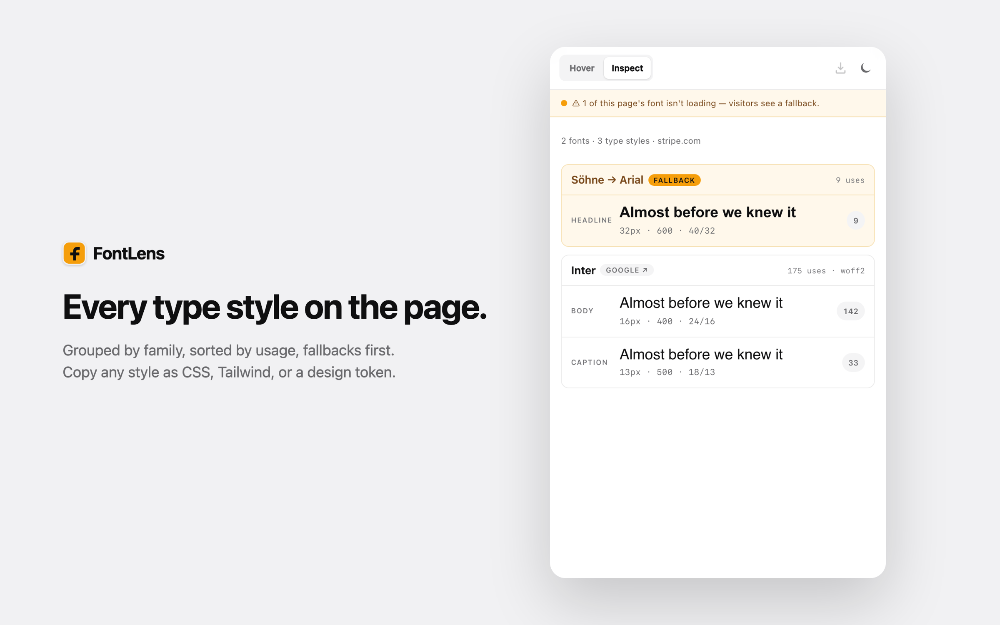
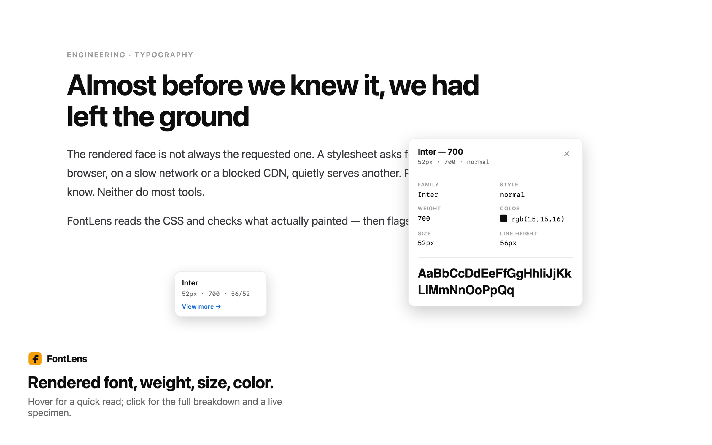
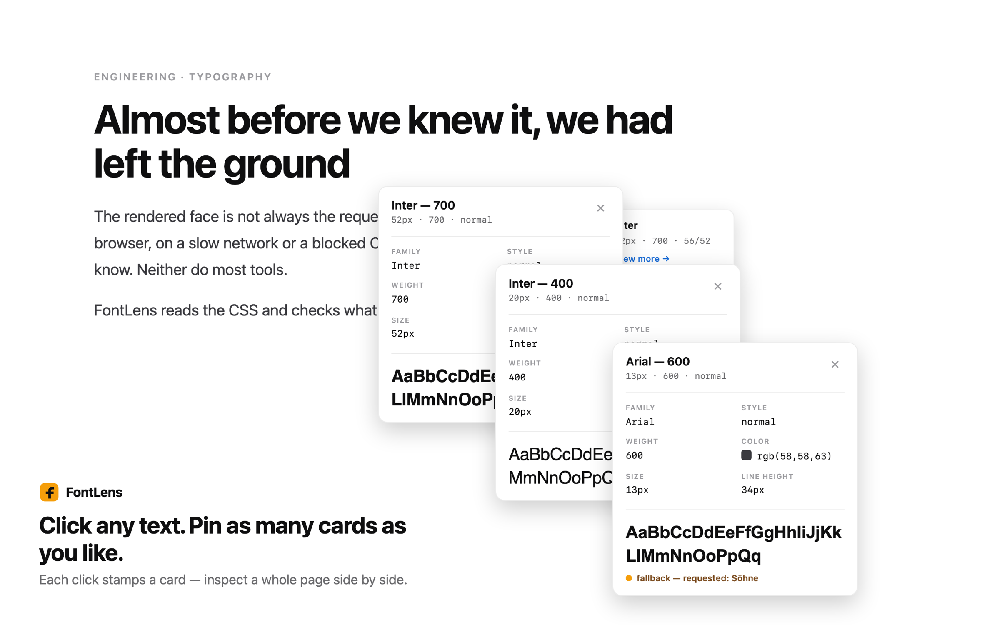
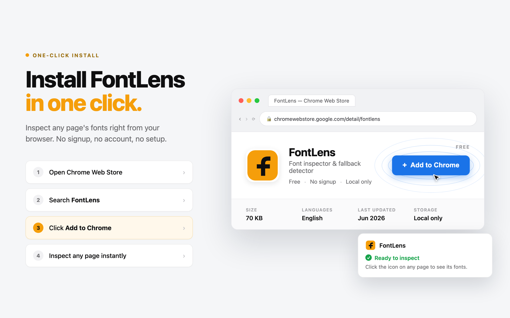

Every font inspector reads the CSS and tells you what the page asked for. FontLens reads the CSS and checks what the browser actually painted — so when "Söhne" fails to load and everyone's seeing Arial, an amber dot says so. It runs entirely on your device, makes zero network calls, and asks for no host permissions.
See the sourceFontLens is a Chrome extension that hovers to reveal any element's real rendered font, click-stamps a card for every style on the page, and — the part no other tool gets right — flags when the font a site requested has silently fallen back to a substitute, all on your device with zero network calls.
Every designer and front-end developer has hit this: the mockup says Söhne, production looks slightly off, and the usual font tools happily report "Söhne" because that's what the CSS asked for. What visitors on a slow network or a blocked CDN actually see is Arial — and nobody tells you. FontLens reads the requested face and checks what the browser truly painted, then marks the gap with a single reserved amber signal. Everything else — the type-system extraction, the copy-as-code, the variable-font sliders — runs locally in the browser, with no account, no telemetry, and no server in the loop.
The signal was my own bug, then a teardown. I lost an afternoon to a design that looked "slightly wrong" in production before realising the webfont had silently fallen back to Arial. So I checked every font inspector I could find — and every one reported the requested face, none the rendered one. That gap defined the scope: build the single check they all miss, and ruthlessly strip everything that isn't in service of trusting it.
Point any popular font inspector at a page and it will confidently name the font — because it's reading the declared font-family off the stylesheet. But a declaration is a request, not a guarantee. On a slow connection, a blocked CDN, a corporate proxy, or a font that simply failed to load, the browser quietly reaches for the next name in the stack. The declared answer and the painted answer diverge, and the tool never notices.
FontLens's bet is that this exact gap is the most valuable thing a font tool can surface. It measures the requested family, then inspects what the browser truly rendered, and when they differ it raises one thing: a reserved amber signal that means only "the requested font isn't loading." Everything else about the product — the restrained grayscale UI, the copy-as-code, the type-system view — is in service of making that one honest signal trustworthy.
Each one answers a real typography question — with the fallback check woven through every surface. Hover for a glance, click for depth.
When the page asks for one face and the browser painted another, an amber dot flags it — the one thing WhatFont and friends miss.
A small floating chip follows the cursor showing the rendered font, weight, size, line-height and colour. No clicking required.
Click text to pin a persistent, expanded card at that spot. Pin as many as you like and compare a whole page's type at once; Esc clears them.
Click to extract each type style, grouped by font family and sorted by usage — with fallbacks surfaced first so problems rise to the top.
If any font on the page is falling back, a full-width amber banner says so up top — e.g. "1 of this page's fonts isn't loading — visitors see a fallback."
Hover a row to reveal copy buttons. One click puts the style on your clipboard in the format you picked — no re-typing sizes by hand.
For variable faces, sliders let you preview wght, wdth, optical size and more in real time, with a Reset link.
Each family is tagged Google, Adobe, Self-hosted, System, Variable, or Fallback — so you know the delivery path at a glance.
There's no server in the loop. You trigger it on the tab you're looking at; a content script reads the page, a detection engine compares requested against rendered, and the side panel renders the result. Here's the whole path:
Click the FontLens icon or press Alt+Shift+F. Under activeTab, the extension injects only into the tab you asked for — never in the background, never on other sites.
A content script and a Shadow-DOM overlay read each element's computed font, weight, size, line-height and colour — isolated from the host page's own CSS so nothing bleeds either way.
lib/detector.js and lib/render-detect.js work out the declared family and the face the browser actually painted. If they diverge, the row is marked a fallback — the reserved amber signal.
Extraction groups every distinct style by family, sorts by usage, tags each with a source badge, and floats fallbacks to the top. Variable faces get live axis sliders.
Hover any row for copy buttons — lib/snippets.js emits CSS or Tailwind, lib/tokens-export.js emits a design token — or download the whole token set. Your theme and default format persist in chrome.storage.local.
FontLens asks for the minimum a tab-inspection tool needs — and pointedly omits host_permissions. It cannot run anywhere until you invoke it on a tab. Here's exactly what each one is for:
Inspects only the tab you focus when you click the icon or hit the shortcut. No background access.
user-initiated onlyInjects the content script and Shadow-DOM overlay on your action. No remote code — everything ships in the bundle.
local scripts onlyOpens the panel that shows the type system, so it can persist across page clicks while you inspect.
on-device UIRemembers your theme and default copy format in chrome.storage.local — never transmitted.

A CSS-only inspector and FontLens both answer "what font is this?" The difference is whether the tool stops at what was requested or goes on to verify what actually rendered. On the left, the common approach; on the right, FontLens's:
// 1. Read the declared font-family const declared = getComputedStyle(el) .fontFamily; // 2. Report the first name in the stack show(declared.split(",")[0]); // → "Söhne" ✓ looks correct… // 3. …but never checks what painted. // If the CDN was blocked, the user // is actually seeing Arial — and // the tool has no idea.
// 1. Read the requested family… const requested = parseStack(el); // 2. …then measure what truly rendered const rendered = detectRenderedFace(el); // 3. Diverged? Raise the ONE signal. if (requested !== rendered) row.flagFallback(requested, rendered); // → "Söhne → Arial · fallback" ⬤ // 4. Local only. Zero network calls.
The trade-off, stated honestly: rendered-face detection is a heuristic, not magic — closed shadow roots and some cross-origin iframes can't always be measured. When FontLens can't confirm, it says so ("specimen approximate") instead of asserting a wrong answer. In exchange you get the one check no CSS-only tool performs, on a tool that never phones home.
The same on-device engine powers every surface. These are the real store shots:



Anyone can list the fonts on a page. The decisions that make FontLens trustworthy were mostly about what not to do — and about being honest where detection is hard. Four real ones:
No framework and no build-time magic to hide behind — plain ES modules a reviewer can read top to bottom, with pure logic separated from anything that touches the DOM. Every file has one job:
No login, no account, no setup. The fastest way to see everything — including the fallback signal — working:
# 1. Open chrome://extensions, enable Developer mode, # click "Load unpacked" and pick the repo root. # 2. Click the FontLens icon (or press Alt+Shift+F). # The side panel opens. # 3. Hover any element for the chip; click text to pin a card. # 4. Visit a site with a blocked/failed webfont to see the # amber fallback signal fire — the part nobody else shows. stripe.com # Söhne → Arial when the face doesn't load
FontLens v1.0.0 is feature-complete and Web Store ready, with a full publish kit — listing copy, privacy answers, a hostable policy, and generated screenshots and promo tiles. Everything in the feature list is working code exercised on every run by a 249-test suite, and because the whole thing is source-available, every privacy claim can be checked line by line.
230 vitest unit tests beside their source plus 19 Playwright end-to-end specs against the real unpacked extension. A dedicated test asserts AA colour contrast.
No analytics, no remote code, no telemetry, and no host permissions. The claim is enforced by a bundle audit that fails the build if it's ever broken.
A full functional-plus-design QA pass (A1–A10, B1–B7) scored 97/100 with zero failures, alongside a clean security review.
The tempting shortcut was to always return an answer: read the CSS, measure what I could, and quietly guess the rest. I rejected it — a confident wrong font is worse than an honest "I can't tell." Closed shadow roots and some cross-origin iframes genuinely can't be measured, so instead of guessing, FontLens renders the specimen in a matching generic and tags the row "specimen approximate." It's a weaker-looking demo, but a tool you can trust.
What I'd do differently: I over-invested in the type-system extraction and copy-as-code before hardening the fallback-detection edge cases — which are the actual reason the tool exists. Next time I'd push the one differentiating signal to its limits first, then add the surrounding convenience features.